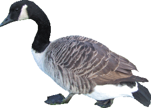

This should relatively straightforward form. Note that the radio buttons currently appear as checkboxes but they are mutually exclusive. This is because in an HTML widget, the radio buttons within a group do not necessarily appear in the document sequentially. As a result, there are issues with the wxWidget's radio button model that uses a "global" variable to identify groups sequentially at creation.
With 2.6.3 and R 2.4 development, it currently doesn't show the contents of the form. And we get error dialog messages about the encoding.
PNG: 
BMP:
Note that the wxInitAllImageHandlers() method is now called
when the wxWidgets application is initialized,
i.e. the call
to
.Call("R_wxWidgets_init", "Rwx")